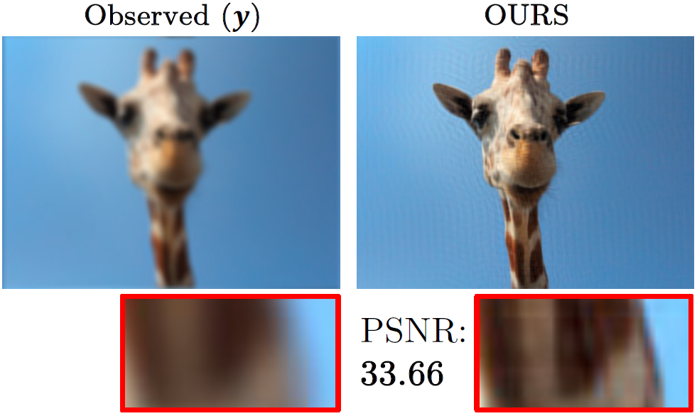

From Theory to Treatment
Advancing Diffusion Models for Medical Diagnosis
Accelerate-@CambridgeC2D3 Funding Awarded Project

Imaging is a key tool in medical diagnosis but images and be ‘noisy’, containing multiple sources of information and are sometimes incomplete. The multidisciplinary project team will pioneer novel adaptive sampling techniques to streamline the training process of diffusion models used in image analysis. This innovation will significantly reduce computation resources, rendering diffusion models more practical for real-world applications, including medical imaging diagnosis.
This project was supported with funding from the Cambridge Centre for Data-Driven Discovery and Accelerate Programme for Scientific Discovery, made possible by a Donation from Schmidt Futures.
People
Research Leader
Research Assistant

Collaborators
Alphabetic Order
Jiahao Huang
Imperial College London
Carola-Bibiane Schonlieb
University of Cambridge
Shujun Wang
The Hong Kong Polytechnic University

Guang Yang
Imperial College London
Lequan Yu
The University of Hong Kong

Chun-Wun Cheng
The University of Cambridge
Publication
 | The Missing U for Efficient Diffusion Models S Calvo–Ordonez, C-W Cheng, J Huang, L Zhang, G Yang, C–B Schonlieb, AI Aviles-Rivero Transactions on Machine Learning Research (TMLR) || Arxiv-Link |
|  | Single-Shot Plug-and-Play Methods for Inverse Problems Y Cheng, L Zhang*, Z Shen*, S Wang, L Yu, RH Chan, C-B Schonlieb and AI Aviles-Rivero Preprint Version — Arxiv-Link |
| Beyond U: Making Diffusion Models Faster & Lighter S Calvo–Ordonez, J Huang, L Zhang, G Yang, C–B Schonlieb, AI Aviles-Rivero NeurIPS 2023 W/ on Diffusion Models Arxiv-Link || Conference || Code |
Prior Work
| CDiffMR: Can We Replace the Gaussian Noise with K-Space Undersampling for Fast MRI? J Huang, AI Aviles-Rivero, C-B Schönlieb and G Yang MICCAI 2023 Arxiv-Link || Conference || Code |
| DiffMIC: Dual-Guidance Diffusion Network for Medical Image Classification. Y Yang, H Fu, AI Aviles-Rivero, C-B Schönlieb and L Zhu MICCAI 2023 (early accept) Arxiv-Link || Conference || Code |
 | TFPnP: Tuning-free Plug-and-Play Proximal Algorithm with Applications to Inverse Imaging Problems. K. Wei, AI Aviles-Rivero, J Liang, Y. Fu, H Huang and C-B Sch√∂nlieb Journal of Machine Learning Research (JMLR) Arxiv-Link || Journal Link || Code Repository üèÜExtended Version of our ICML 2020 Outstanding Paper Award |